Implausible Status of Panther Plus Liquid Waste Permanent Bottle
Error Code
| Dec | Hex |
|---|---|
|
258.000.00018 |
0x13.0x00.0012 |
Complaint Description
An implausibility error for the Panther Plus Liquid Waste-on-the-Fly Permanent Bottle occurs in the following scenarios:
- Transfer pump displacement cup leak.
- Transfer pump bellows leak.
- Transfer pump poppet valve obstruction.
- Transfer pump motor failure.
- Kink in tubing.
- Liquid level sensor float failure.
-
WHEN TRANSFER PUMP IS PUMPING LIQUID FROM PERMANENT BOTTLE TO REMOVABLE BOTTLE: System checks that liquid level has decreased within a specified time interval [10s] (controlled by parameter DurationToCheckForLevelDecrease = 10s). If no liquid level decrease is detected, error occurs.
-
DURING ASSAY PROCESSING: When the liquid level of the permanent bottle exceeds the maximum level (controlled by parameter PermanentBottleMaxWasteLevel = 80%) and pumping should be initiated, system checks if test count in the permanent bottle is greater than 0. If the test count is 0, error occurs. Note: This has been adjusted down to 40% in System SW v7.2.5, to better mitigate foaming related issues.
-
DURING ASSAY PROCESSING: When the test count in the permanent bottle exceeds the maximum count (controlled by parameter PermanentBottleMaxWasteCount = 160) and pumping should be initiated, system checks if liquid level in the permanent bottle is greater than 0. If the liquid level is 0, error occurs. Note: This has been adjusted down to 80 tests in System SW v7.2.5, to better mitigate foaming related issues.
Keywords: ActivateWasteBellowPumpStarted emptying|Started the bellow |state of permanent waste |PC 13 00 00 00 21|PC 13 08 00 00 00 00 01|PC 13 08 00 00 00 00 00|implausible
PC 13 00 00 00 21 00 01 xx = report permanent waste bottle fluid level, xx = reported % fill volume
PC 13 08 00 00 00 00 01 = start pump
PC 13 08 00 00 00 00 00 = stop pump
TABLE OF CONTENTS
Technical Support
Mandatory Dispatch: Classify all Implausible Status of Panther Plus Liquid Waste Permanent Bottle errors as a Severity 2. Troubleshoot error as normal. Inform customers FSE Field Service Engineer. will contact them to set up the service. Customer can continue to process samples if instrument restart is successful.
Field Service Engineer. will contact them to set up the service. Customer can continue to process samples if instrument restart is successful.
- Instruct customer to make sure the Removable Liquid Waste Bottle is seated correctly.
- Reset instrument.
- Ignore the implausible waste on startup (this is triggered when sensor is empty but database thinks there more fluid in permanent waste bottle).
- Request logs (in case internal teams want to look into this).
- Notify FSE as this is likely going to recur. (WO Sev 2)
Questions to document in Case:
- Ask the customer what type of samples they are running.
- Ask customer if they have other Waste on the Fly (WOF) units and if they have recurring issues.
- Ask customer how long the unit has been running WOF.
Field Service
Identify in logs the sensor reading levels and record in case notes. This information will be useful if FSE needs to be dispatched to check sensor.
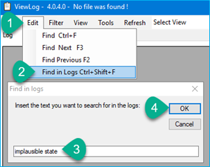
Figure 1. Find in logs "implausible state"
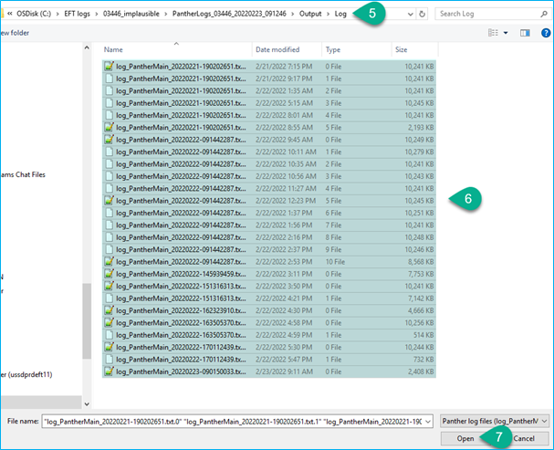
Figure 2. Navigate to …\Output\Log folder and Select all files. Note: This can also be performed on local Panther Instrument. From C:\Panther\Software\PC\Bin, launch ViewLog.exe. Logs are located in C:\Panther\Software\PC\Bin\Output\Log directory.
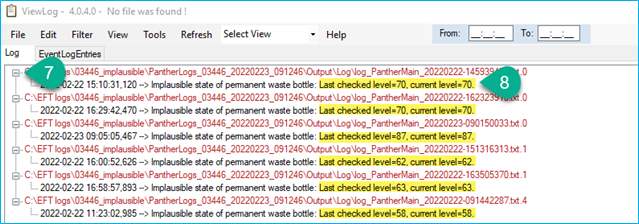
Figure 3. If results are present, expand and view. Waste implausible occurs during assay processing when pump is ON and Last checked level is the same as current level after 10 seconds. Level value is the reported percentage filled of permanent bottle. These levels indicate the float is getting stuck in the range of 58-87% fill capacity.
Inspect plumbing and fluid flow from permanent to removable waste bottle
Open waste drawer and inspect plumbing, check for obstructions or bubbles in line. Launch service software and permanent sensor reading, start transfer pump and verify fluid moves to removable waste bottle. Air bubbles should not be present until straw is pulling fluid from bottom of permanent waste bottle.
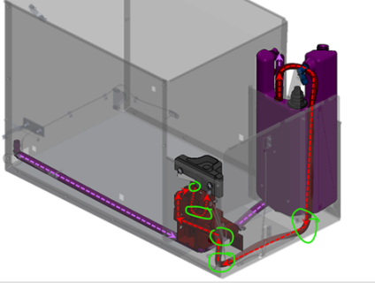
Figure 4. Purple dotted lines show fluid from Panther aspirators to permanent waste bottle. Red dotted lines show fluid flow from permanent waste bottle to transfer pump to removable waste bottle. Green circles indicate common pinch points and tube routing problems.
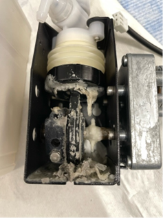
Review the logs
Search by keywords:
ActivateWasteBellowPumpStarted emptying|Started the bellow |state of permanent waste |PC 13 00 00 00 21|PC 13 08 00 00 00 00 01|PC 13 08 00 00 00 00 00|implausible
PC 13 00 00 00 21 00 01 xx = report permanent waste bottle fluid level, xx= reported % fill volume
PC 13 08 00 00 00 00 01 = start pump
PC 13 08 00 00 00 00 00 = stop pump
PC 13 00 00 00 21 00 01 50 = 80%
Permanent bottle
-
Check:
Sensor level in Service Software.
Fluid level in permanent waste bottle.
Fill permanent waste bottle to 78%, and run prime in Panther GUI
 Graphical User Interface – allows users to interact with the software using images, graphical icons, and visual indicators rather than text commands. to see if transfer pump turns on.
Graphical User Interface – allows users to interact with the software using images, graphical icons, and visual indicators rather than text commands. to see if transfer pump turns on.Run prime again to trigger the 160 test transfer.
Note: PermanentBottleWasteCount = 160 or 80% sensor reading will start transfer pump process.
In Service Software:
-
Fill permanent waste bottle to % fill level range error occurred. Enable vacuum and pump, make sure fill level goes down within 10s.
-
Normal pump operation should drop approximately 1% per second. Service Software readout appears to update around 3 - 4% every 3 - 4 seconds.
-
Inspect:
- Tubing for kinks
- Straw inside bottle is rigid and should have a v-cut
- Debris in bottom of permanent bottle
- Sensor float for sticking
- Inspect/reseat pump and sensor cables
Resolution:
Unkink or replace kinked tubing.
Replace Permanent Bottle if straw is damaged.
For debris in the bottom of the permanent bottle:
Fill the bottle with very hot water up to around 80%, drain and repeat five times.
If unable to clear – replace bottle.
For a sticky float sensor:
- Remove the vacuum filter and removable waste bottle. Unplug the sensor cable.
- Loosen the sensor by turning the nut on the sensor one revolution – it just needs to be cracked loose.
- You remove the sensor by grabbing the white part of the sensor and turning counterclockwise. It will require you to turn about 20 revolutions.
- If unable to resolve – replace the permanent bottle.
Test:
Perform WOTF OQ – refer to Panther System Service Manual.
In Panther – Prime 5x, or enough to trigger activation of the transfer pump.
Transfer pump
Fill permanent waste bottle until sensor reading shows 80% (this is approximately 1L of fluid), leave vacuum off. Begin transfer and verify fluid moves as expected. If fluid is not moving, inspect pump.
DIRTY OR DAMAGED POPPET VALVE
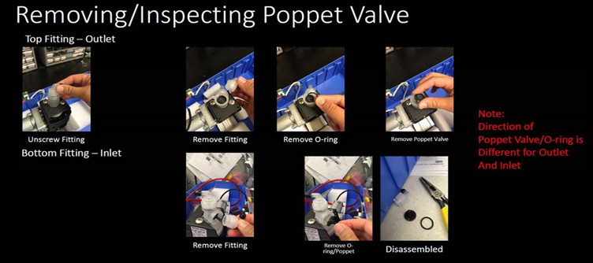
Resolution:
Clean or replace poppet valve.
Test:
Perform WOTF OQ – refer to Panther System Service Manual.
LEAKING DISPLACEMENT CUP
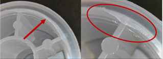
In Service Software:
Verify that liquid is present in the permanent bottle:
Disconnect the bleach filter to gain viewing access to the permanent bottle. Shine light onto the side of the bottle to see if liquid is present.
Check that liquid level in Permanent Bottle in SSW is above 0%.
If no liquid is present, follow steps in the Liquid Waste on the Fly Verification found in the Service Manual to add liquid to the permanent bottle.
Remove cap of removable bottle to view inside bottle.
Turn on transfer pump. Listen for sound of transfer pump motor running. A leak in the bellows is present if:
The pump motor is running.
Little or no liquid is seen pumped into the removable bottle.
The liquid level in the Permanent Bottle is not decreasing (both in SSW and by visual inspection of the liquid level in the bottle and the tubing from the bottle to the pump).
Turn off transfer pump.
Resolution:
Replace Transfer Pump Bellows.
Test:
Perform WOTF OQ – refer to Panther System Service Manual.
Inspect permanent waste bottle and float sensor
Solid waste can build up on inside of permanent waste bottle, causing float to stick against sensor.
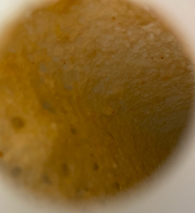
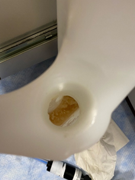
Also, in some instances the rod that the sensor is mounted on is not allowing the float sensor to travel freely along the rod, contacting the inner wall of the bottle. Rotating the sensor counterclockwise 180 degrees may help. To remove the bow in the rod altogether, or to orient the bow toward the inside of the bottle, allowing the float sensor to move more freely without contacting the inner bottle wall: simply loosen the lock nut, rotate the entire sensor counterclockwise 180 degrees, then resecure sensor in place by re-tightening the lock nut.
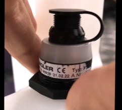
Resolution:
Clean permanent waste bottle:
- Hot water and endozime flush can be used to help remove the buildup.
- With vacuum off, fill permanent waste bottle with hot water. Do not over fill permanent waste bottle and do not turn on vacuum during this process. (Vacuum filter can be damaged). Permanent waste bottle can also be removed. (Note: Removing static bottle from drawer is an option.)
- Allow hot water to sit in waste bottle to dissolve solid wastes.
- Empty permanent waste bottle using transfer pump.
- Repeat as many times as necessary. (Usually four flushes is sufficient)
- Pour bottle of endozime into permanent waste bottle and fill with hot water. Allow time to soak.
- Empty permanent waste bottle.
Cleaning sensor:
- Remove the vacuum filter (this is for more working space).
- Unplug the sensor cable.
- Mark or measure the existing nut location.
- Loosen the sensor by turning the nut on the sensor one revolution – it just needs to be cracked loose.
- Remove the sensor by grabbing the white part of the sensor and turning counterclockwise. It will require you to turn about 20 revolutions.
- Take pictures and clean the sensor float and internal tube.
- Replace sensor and set back to original position. If original position is too deep in bottle back the sensor out by two revolutions.
If sensor is broken or not responsive, sensor cable should be checked (MME-04468 Panther Plus, Continuous Access, Fixed Waste Reservoir, Level Sensor). In the event sensor is damaged, a permanent bottle will need to be ordered.
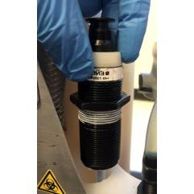
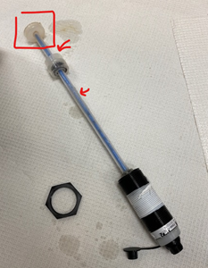
Test:
Verify sensor is working as expected during fluid transfer from permanent to removable waste bottle.
Normal pump operation sensor reading should drop approximately 1% / second. SSW readout appears to update around 3 - 4% every 3 - 4 seconds (in 10 seconds, the sensor should read 10% lower).
Operational check in Panther GUI:
-
Trigger using % fluid
- Fill permanent waste bottle to 75%* level *35% can be used for sw v7.2.5.
- Start Panther GUI, perform prime which should trigger SW to pump fluid over.
-
Trigger by waste count
- 160 tests = 3 full primes + 1 mini prime (full prime = 50 tests, miniprime = 10 tests).
Inspect vacuum filter
Stop! This does not affect fluid transfer from permanent waste bottle to removable waste bottle.
Resolution:
Replacing vacuum filter will not address waste implausibility errors.
Test:
Not applicable.
 button at the top of the page to send feedback, comments, or change requests.
button at the top of the page to send feedback, comments, or change requests.